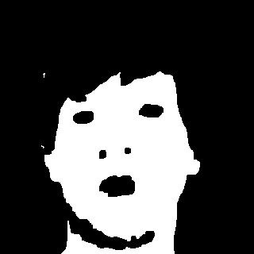
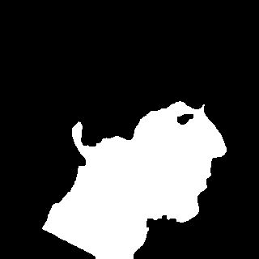
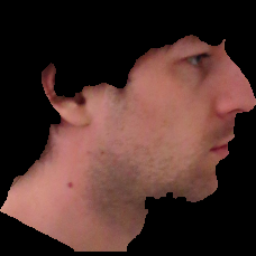

Face3d
Visualisierung 2. SS2016. Pinetz Thomas, Scheidl Harald
Part 1: Face detection
Input images


Preprocessing
...
Skin color threshold


Potential facial components


Classified facial components


Face region


Generating OpenGL textures

Part 2: Generic face model
Final result

Part 3: Face Model
Final result